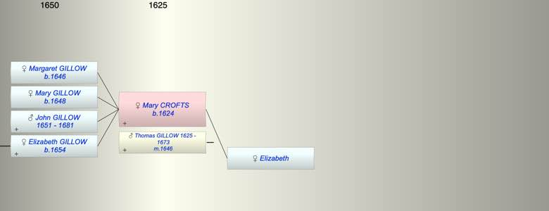

| [Index] |
| Mary CROFTS (1624 - ) |
|  |
| b. 1624 |
| m. 22 May 1646 Thomas GILLOW (1625 - 1673) at St Mary Bredin, Canterbury |
| Parents: |
| Elizabeth |
| Children (4): |
| Margaret GILLOW (1646 - ) |
| Mary GILLOW (1648 - ) |
| John GILLOW (1651 - 1681) |
| Elizabeth GILLOW (1654 - ) |
| Grandchildren (1): |
| Mercy LONG (1673 - 1765) |
| Events in Mary CROFTS (1624 - )'s life | |||||
| Date | Age | Event | Place | Notes | Src |
| 1624 | Mary CROFTS was born | ||||
| 1646 | 22 | Birth of daughter Margaret GILLOW | Walmer | Note 1 | |
| 22 May 1646 | 22 | Married Thomas GILLOW (aged 21) | St Mary Bredin, Canterbury | Note 2 | |
| 1648 | 24 | Birth of daughter Mary GILLOW | Walmer | Note 3 | |
| 1651 | 27 | Birth of son John GILLOW | Walmer | Note 4 | |
| 1654 | 30 | Birth of daughter Elizabeth GILLOW | Walmer | Note 5 | |
| 23 Nov 1673 | 49 | Death of husband Thomas GILLOW (aged 48) | Note 6 | ||
| 18 Jan 1681 | 57 | Death of son John GILLOW (aged 30) | St Laurence | Note 7 | |
| Created on a Mac™ using iFamily for Mac™ on 8 Oct 2023 |